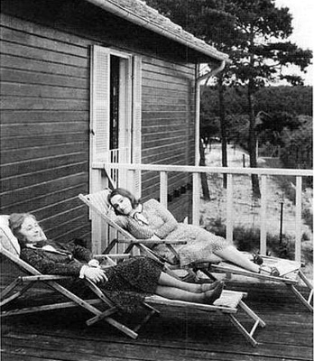

Walter Isaacson - Einstein
ALBERT EINSTEIN es uno de los científicos más importantes de la historia y un icono del siglo XX.
Pero ¿cómo funcionaba su mente? ¿Qué le hizo un genio? ¿Cómo era el ser humano detrás del personaje
público? En la primera biografía completa de Albert Einstein, escrita pudiendo consultar todos
sus archivos, Walter Isaacson logra un extraordinario retrato del personaje y de su época y
un fascinante relato de su vida.
A partir de la correspondencia privada de Einstein este libro explora cómo un funcionario
de patentes imaginativo e impertinente (un padre incómodo con un matrimonio complicado,
en principio incapaz de conseguir un trabajo en la universidad ni un doctorado) fue capaz
de desvelar los secretos del cosmos y comprender los misterios del átomo y del universo.
Su éxito se debió a cuestionar los conocimientos existentes y asombrarse ante misterios
que a otros les parecían mundanos.
Así acabó adoptando una moral y unas ideas políticas
basadas en el respeto por las mentes libres, los espíritus libres y los individuos libres.
Prefacio
Einstein en Santa Bárbara, 1933
La vida es como montar en bicicleta.
Si quieres mantener el equilibrio no puedes parar.
Albert Einstein, en una carta a su hijo Eduard
5 de febrero de 1930.
Capítulo 1
El hombre que viajaba con un rayo de luz
Capítulo 2
Infancia
1879-1896
Capítulo 3
El Politécnico de Zurich
1896-1900
Capítulo 4
Los amantes
1900-1904
Capítulo 5
El año milagroso
1905
Capítulo 6
La relatividad especial
1905

Capítulo 7
La idea más feliz
1906-1909
Capítulo 8
El profesor errante
1909-1914
Capítulo 9
La relatividad general
1911-1915

Capítulo 10
El divorcio
1916-1919
Capítulo 11
El universo de Einstein
1916-1919
Capítulo 12
La fama
1919
Capítulo 13
El sionista errante
1920-1921
Capítulo 14
El Premio Nobel
1921-1927

Capítulo 15
Teorías del campo unificado
1923-1931

Capítulo 16
La cincuentena
1929-1931
Capítulo 17
El Dios de Einstein
Capítulo 18
El refugiado
1932-1933
Capítulo 19
Estados Unidos
1933-1939
Capítulo 20
El entrelazamiento cuántico
1935
Capítulo 21
La bomba
1939-1945
Capítulo 22
Un solo mundo
1945-1948
Capítulo 23
Un hito
1948-1953
Capítulo 24
Caza de brujas
1951-1954
Capítulo 25
El final
1955
Epilogo
El cerebro y la muerte de Éinstein

Sus padres. Paulina y Hermann Einstein
En una foto de estudio en Munich, a los catorce años
En la escuela de Aarau, 1896
Con Mileva Maric, c. 1905.
Con Mileva y Hans Albert. 1905

Eduard, Mileva y Hans Albert

Con Conrad Habicht (izquierda) y Maurice Solovinc de la Academia Olimpia, c. 1902
Anna Winteler Besso v Michele Besso.
En la oficina de patentes de Berna durante el «año milagroso» de 1905

En Praga, 1912
Marcel Grossmann, quien le ayudó con las formulas matemáticas tanto en clase como en la relatividad general
Paseando con Madame Curie en Suiza, 1913
Con el químico Fritz Haber, asimilacionista y mediador en su matrimonio, julio de 1914
Bajo la atenta mirada del líder sionista Chaim Weizmann en Nueva York, abril de 1921

Encuentro con la prensa en Nueva York, 1930.
Con Elsa en el Gran Cañón, febrero de 1931.
El Congreso Solvay de 1911
El Congreso Solvay de 1927

Recibiendo ia medalla Max Planck de manos del propio Planck. 1929.

En Leiden: detrás. Einstein. Ehrenfest y De Sitter: delante. Eddington y Lorentz: septiembre de 1923.
Con Paul Ehrenfest y el hijo de este en Leiden
Niels Bohr y Einstein hablando de mecánica cuántica en casa de Ehrenfest, en Leiden, 1925, en una foto hecha por el propio Ehrenfest.
Werner Heisenberg y Erwin Schrödinger
Max Born y Philipp Lenard
De vacaciones en el Báltico. 1928
Conectando con el cosmos
Con Elsa y su hija Margot. Berlín, 1929.

Margot e Ilse Einstein en la casa de Caputh, 1929.
En Caputh con su hijo Hans Albert y su nieto Bernhard, 1932
En el Observatorio Monte Wilson, cerca del Tecnológico de California. descubriendo que el universo se expande, enero de 1931
Navegando contra el viento, estrecho de Long Island, 1936
Recibiendo a Hans Albert a su llegada a Estados Unidos. 1937.
Margot, Einstein y Helen Dukas haciendo el juramento de ciudadanía estadounidense, octubre de 1940
Recibiendo un telescopio en el jardín trasero del número 112 de Mercer Street, bajo el ventanal abierto en su estudio
Con Kurt Gödel en Princeton. 1950